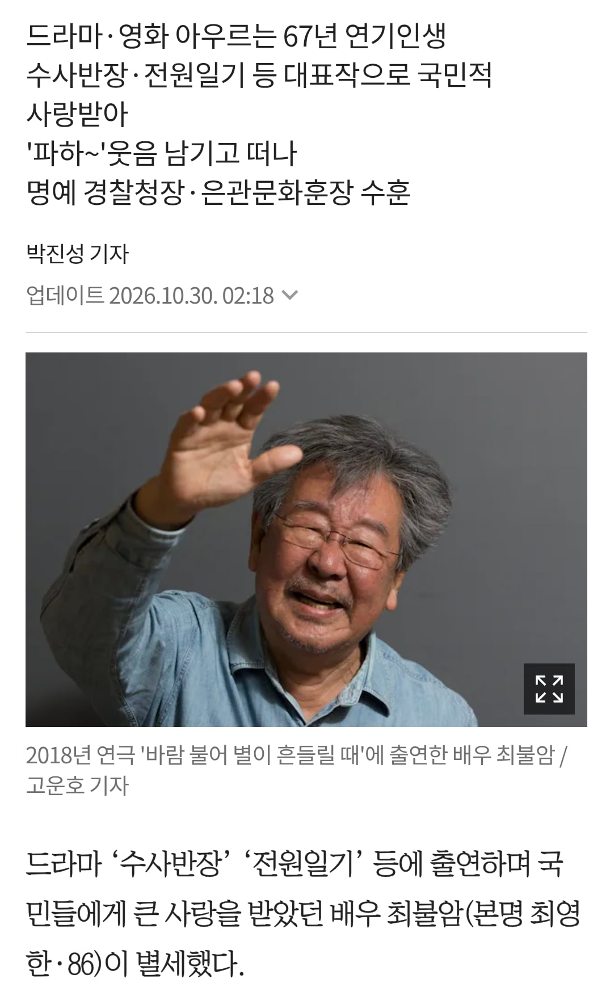
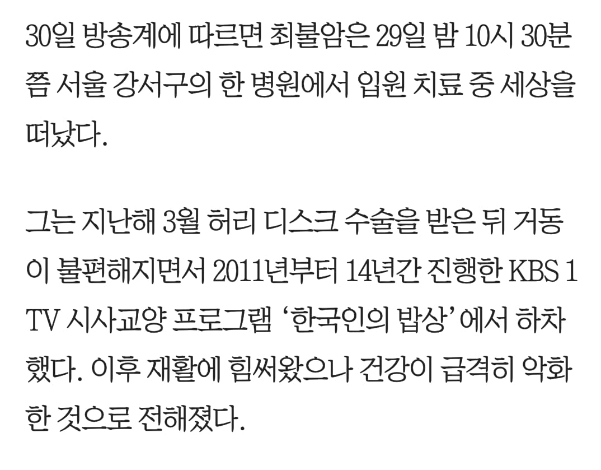

https://www.chosun.com/culture-life/culture_general/2026/10/30/C4FZLCB77RBDBPTFSNJY4ZGBHY/
삼가 고인의 명복을 빕니다.


https://www.chosun.com/culture-life/culture_general/2026/10/30/C4FZLCB77RBDBPTFSNJY4ZGBHY/
삼가 고인의 명복을 빕니다.
국민배우 ..
삼가 고인의 명복을 빕니다.
한시대가 가시는구나
삼가 고인의 명복을 빕니다.
세월 시발
신 시발
최불암이 손자랑 놀고 있었다.
손자: 굿모닝~
최불암: 그게 뭔 뜻이냐?
손자: 영어로 "안녕하세요"라는 거예요.[2]
그걸 듣고 흐뭇해진 최불암은 부엌으로 가서 김혜자한테 자랑하고 싶어졌다.
최불암: 굿모닝~
김혜자: (태연하게) 시래기국이유.
// 삼가 고인의 명복을 빕니다...
최불암과 김혜자가 레스토랑에서 갔다.
돈까스를 2개 시켜서 먹고 있는데, 그 때 마침 우아한 음악이 레스토랑에서 흘러 나왔다.
김혜자가 궁금해서 최불암에게 물었다.
"지금 나온 곡이 무슨 곡이에요?"
그러자 최불암이 하는 말,
"돼지고기!"
즐거웠어요..
정정하신줄 알았음..
세상은 참 비정하고 슬프다
아... 시대가 저무는구나..
삼가 고인의 명복을 빕니다
삼가 고인의 명복을 빕니다
선생님 그곳에선 편안하시길 바랍니다 고인의 명복을 빕니다
삼가 고인의 명복을 빕니다
아이고... 어릴 때 최불암 시리즈 이런거 많이 봤었는데ㅠ
삼가 고인의 명복을 빕니다
아침부터 먹먹하네 참..
편히 쉬십셔 선생님
어르신들 못걷게되면 금방 돌아가신다던 어머니말이 옛날에는 이해가 안됐는데 지금 보면 이해가 되더라.
보통 한번 자빠지거나 다치셔서 병상에 눕거나 앉아만 계시는분들 얼마 못사시고 대부분 돌아가심.
맞음 우리 외할아버지도 건강하신 편이였는데 회장실에서 넘어져서 다치시고 난 후로 몸상태 안좋아지시고 1년 좀 넘게 고생하시다가 돌아가심.... 나이들면 진짜 낙상사고 조심해야함
삼가 고인의 명복을 빕니다...
미국에서 젊어지는 약 임상실험 들어갔다던데
조금만 더 계셧으면 우선대상으로 살 수 있으셧을텐데
최불암 시리즈는 영원히 남을 것입니다.
삼가 고인의 명복을 빕니다…